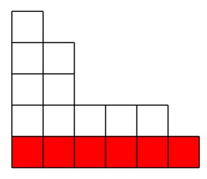

Билет 4
Рекуррентная формула для числа разбиений на фиксированное число слагаемых.
Теорема 4
(n) = (n-m) + (n-m) +...+ (n-m).
Доказательство
- Рассмотрим диаграмму Юнга с n клетками и m столбцами.
- Удалим нижнюю строку.
- Получим диаграмму с n − m клетками и k ≤ m столбцами.

Следствие 1
Количество неупорядоченных разбиений числа n − m на не более чем m слагаемых равно (n).
Следствие 2
(n) = (n-m) + (n-1).
Доказательство
(n) = (n-m) + ( (n-m) +...+ (n-m)) = (n-m) + (n-1).
Замечание
- Отметим, что p1(n) = 1 при всех n.
- При помощи доказанных выше рекуррентных соотношений, можно получить явные формулы для (n) при малых m.
- Мы сделаем это для m = 2 и m = 3.